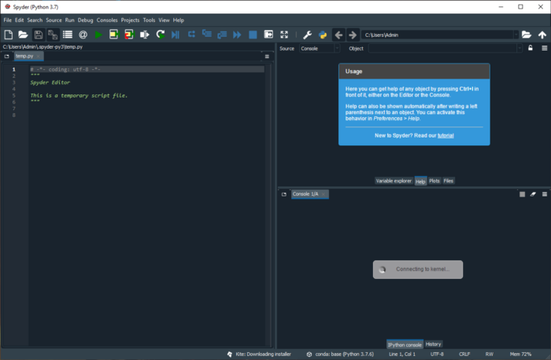

7. Spyder

Spyder — это мощная научная интегрированная среда программирования, написанная на Python, для Python. Она разработана учеными, инженерами и аналитиками данных для них самих. Spyder обладает уникальным сочетанием возможностей. Продвинутое редактирование, анализ, отладка и профилирование сочетается с возможностями исследования данных, интерактивного выполнения, глубокой инспекции кода и красивой визуализацией. Установить Spyder просто: скачайте его как часть дистрибутива Anaconda. Разработчики рекомендуют последнюю 64-битную версию Python 3, если у вас нет особых требований.
Плюсы:
Минусы: